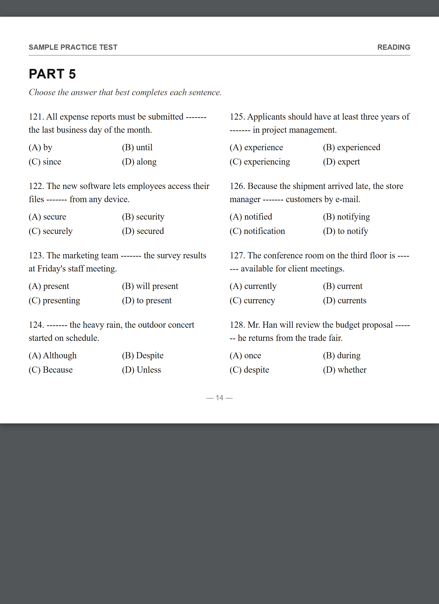
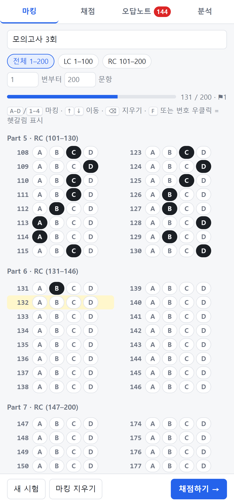
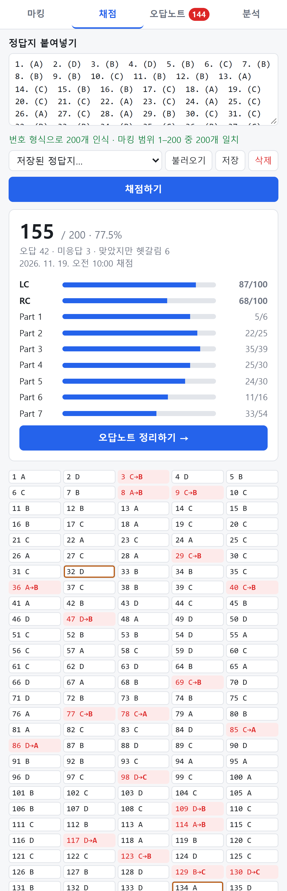
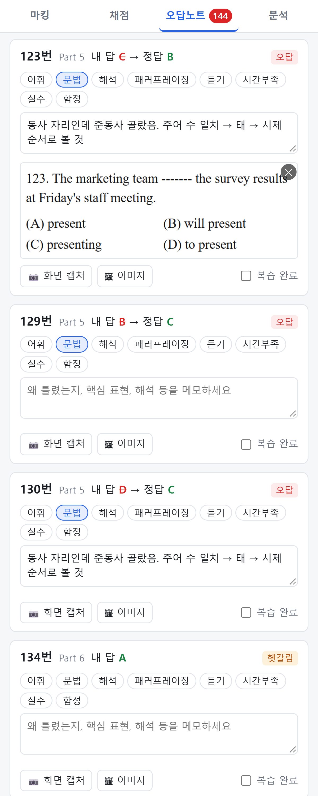
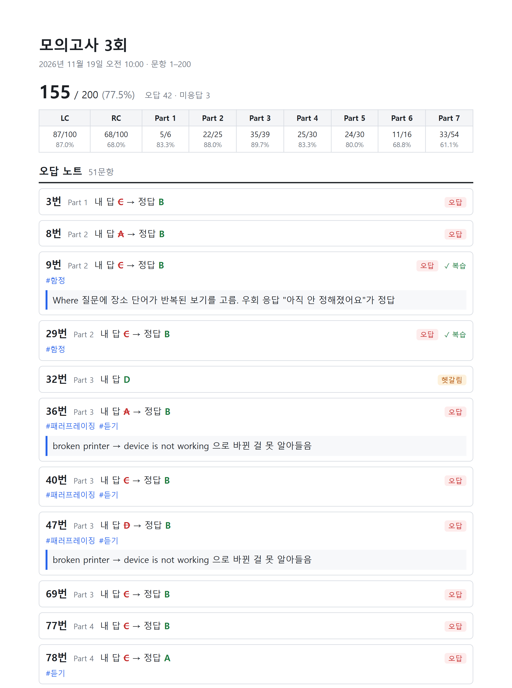
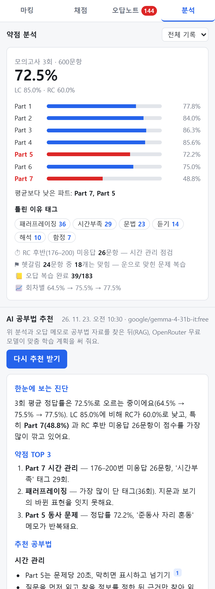
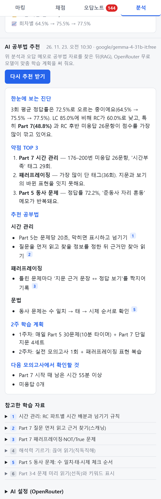

붙여넣기 채점
해설지의 정답을 형식 그대로 복사해 붙여넣으면 번호를 알아서 맞춰 채점합니다.
101. (B) 102. (D) 번호 형식
1-10 ABDCA BCDAB 순서 형식
①②④③ Ⓐ–Ⓓ ＡＢ 기호·전각
- LC/RC · Part 1–7 정답률
- 미응답·헷갈림 분리 집계
- 마킹을 고쳐 다시 채점하면 기록 갱신
CHROME EXTENSION · RAG STUDY COACH
PDF 시험지 바로 옆에서 마킹하고, 해설지를 붙여넣어 채점하고,
틀린 문제를 정리해 AI가 약점과 공부법까지 진단하는 크롬 확장 프로그램


PDF 옆 한 화면에서
마킹부터 약점 진단까지 끝낸다

해설지의 정답을 형식 그대로 복사해 붙여넣으면 번호를 알아서 맞춰 채점합니다.
101. (B) 102. (D) 번호 형식
1-10 ABDCA BCDAB 순서 형식
①②④③ Ⓐ–Ⓓ ＡＢ 기호·전각

채점할 때마다 오답 · 미응답 · 맞았지만 헷갈린 문항이 회차별 노트로 모입니다.

인쇄용 A4 문서를 만들어 크롬의 “PDF로 저장”으로 내보냅니다. 한글이 이미지가 아닌 텍스트로 들어가 선택·검색이 됩니다.

